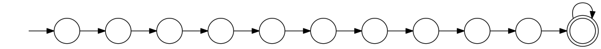

The Composition of Meaning in Natural Language
Table of Contents
1 Recap
- last chapter:
- natural language sentences -> logical forms;
- evaluation of logical forms with respect to a model;
- Haskell as a lambda calculus engine
- disadvantage:Haskell interpreter hides the details of how expressions of typed logic get simplified.
- present chapter: composition of meaning can be carried out without
a logical form language as intermediate representation level.
- models of predicate logic can be extended to models of typed logic;
- how typed logic yields appropriate meaning representations for the lexical items of natural language fragments
- provides the means for building up meanings in a compositional way.
- requirement: treat quantifiers correctly.
2 rules of the game
natural language -> predicate or typed logic presupposes:
- that you grasp the meanings of the formulas of the representation
language;
- can be made fully explicit, but because of this presupposed understanding of the original message, such translations cannot count as explications of the concept of meaning for natural language.
- that you understand the meanings of the English sentences.
- Computational semantics has little or nothing to say about the interpretation of semantic atoms. It has rather a lot to say, however, about the process of composing complex meanings in a systematic way out of the meanings of components.
- The meaning of an expression is a function of the meanings of its immediate syntactic components and their syntactic mode of composition.
3 quantification
3.1 Aristotle
An important goal in computational semantics for natural language is to provide an account of the process of drawing inferences in natural language.
Aristotle’s theory of quantification has two logical defects:
- Quantifier combinations are not treated; only one quantifier per sentence is allowed.
- Non-standard quantifiers such as most, half of, at least five, etc, are not covered.
- A minor additional flaw is the assumption of existential presupposition.
3.2 Frege
- first Aristotelian defects was removed by Frege: quantifiers ∀ and ∃ with their associated variables can combine with arbitrarily complex predicate logical formulae to form new predicate logical formulae, so a formula may contain an arbitrary number of quantifiers.
- Using standard quantifiers and equality it is also possible to express numerical constraints like At least two A are B:
∃x∃y(x ≠ y ∧ Ax ∧ Ay ∧ Bx ∧ By).
- all disjunctions and conjunctions of quantifiers of the forms at least n and at most m can be expressed in terms of standard quantifiers and equality.
- To illustrate the claim that first-order logic has no difficulty with quantifier combinations, consider the translation:
Every prince sang a ballad. ∀x(Prince x → ∃y(Ballad y ∧ Sing x y)).
- but: translation does not contain phrases corresponding to the
noun phrases every prince or a ballad.
- Given a natural language sentence and its translation into first-order logic, it is impossible to pinpoint the sub-expression in the translation that gives the meaning of a particular noun phrase in the original.
- In the translation into first-order logic, the noun phrases have been syntactically eliminated.
A ballad was sung by every prince. ∃y(Ballad y ∧ ∀x(Prince x → Sing x y)) ∀x(Prince x → ∃y(Ballad y ∧ Sing x y))
- two translations appropriate -> sentence is ambiguous.
- translation into FOL can be used to disambiguate natural language sentences.
Fregean quantifiers still have problems:
- finding logical representation languages permitting the preservation of noun phrases as separate constituents;
- finding procedures for translating from natural language to logical representations that are not ad hoc; – what is ad-hoc about FOL?
- finding ways to treat non-standard quantifiers such as most, preferably in a uniform framework with standard quantifiers.
3.3 The relational view of quantifiers
- quantifier
- a two-place relation on the power set of a domain
of discourse (or universe)
Esatisfying certain requirements. (You can readEas mnemonic for the set of entities, for example.) - power set of a set
E - notation
P(E), is the set of all subsets ofE. A two-place relation onP(E)is a set of pairs of subsets ofE. - (no term)
- the relational view can be used to remedy the defects of both the Aristotelian and the Fregean theory.
- (no term)
- a representation language with generalized quantifier expressions (expressions denoting two-place relations between sets) and a notation for lambda abstraction is eminently suited for the compositional analysis of natural language sentences with quantified noun phrases.
| expression | translation | type |
|---|---|---|
| every | every | (e -> t) -> ((e -> t) -> t) |
| princess | Princess | (e -> t) |
| every princess | every Princess | (e -> t) -> t |
| laughed | Laugh | (e -> t) |
| every princess laughed | (every Princess) Laugh | t |
- DET
everytranslates into an expression every denoting a function from properties to a function from properties to truth values.- More precisely, every denotes the function mapping a property P to the characteristic function of the set of all properties having P as a subset.
- This expression yields true in case the property of being a princess is included in the property of laughing, false otherwise.
- quantifier combinations are dealt with compositionally:
Every mermaid hummed a song.
- The trick is finding the right translation for the transitive verb.
λXλy -> X (λz -> Hum y z), where X is a variable over noun phrase type expressions.
(λXλy -> X (λz -> Hum y z))(a Song).
λy -> (a Song)(λz -> Hum y z).
- a denotes the function which maps every property P to (the characteristic function of) the set of all properties having a non-empty overlap with P. Feeding as argument to the expression every Mermaid:
(every Mermaid)(λy -> ((a Song)(λz -> Hum y z))).
Figure 1: analysis of Every mermaid hummed a song.
3.4 Conditions on Quantifier Relations
- we view quantifiers as two-place relations on the power set of some
domain E, satisfying certain requirements. but which ones?
All dwarfs workis true in a given model if and only if the relation of inclusion holds between the set of dwarfs in the model and the set of workers in the model.- Abstracting from the domain of discourse, we can say that
determiner interpretations (henceforth simply called determiners)
pick out binary relations on sets of individuals, on arbitrary
domains of discourse E. The notation is DEAB.
- We call A the restriction of the quantifier and B its body.
- the NP
all dwarfsis the restriction of the determiner all, and the VPworkis the body.
Figure 2: Interpretation of DEAB as a relation between sets A and B
- Not all two-place relations on sets of individuals are quantifier
relations. requirements:
- extension (EXT);
- conservativity (CONSE).
3.4.1 EXT
For all A, B ⊆ E ⊆ E' : DᴇAB ⇔ Dᴇ'AB.
A relation observing EXT is stable under growth of the universe. So, given sets A and B, only the objects in the minimal universe A ∪ B matter. An example is all: to determine the truth of All dwarfs work, we only need the intersection of the set of dwarfs and the set of workers. It does not matter at all how many or which kind of entities are contained in the rest of the domain. But not all natural language determiners do satisfy EXT. An example of a determiner that does not is many in the sense of relatively many.
3.4.2 CONSE
For all A, B ⊆ E: DᴇAB ⇔ DᴇA(A ∩ B).
This property expresses that the first argument of a determiner
relation (the inter- pretation of the noun) plays a crucial role:
everything outside the extension of the first argument is
irrelevant. Some is an example for a conservative determiner: to
determine the truth of Some dwarfs work, we only need to check
whether the set of dwarfs contains workers – nothing outside the
set of dwarfs will have any effect on the truth or falsity of the
sentence.
One example that does not satisfy CONSE is only in the following sentence.
Only dwarfs sing during work.
This example is true in a situation where all singing workers are dwarfs. Starting out from a situation like this, and adding some non-dwarfs to the singing workers will it false. This shows non-conservativity.
All is still well if it can be argued that noun phrases starting with only, mostly, or mainly (two other sources of non-conservativity) are exceptional syntactically, in the sense that these noun phrase prefixes are not really determiners. In the case of only, it could be argued that only dwarfs has structure
[NP [MOD only][NP dwarfs]]
, with only not a determiner but a noun phrase modifier, just as in:
Only Bombur sings during work.
However this may be, separating out the determiners satisfying
CONSE and EXT is important, for the two conditions taken together
ensure that the truth of D AB depends only on A − B and A ∩
B. (Thus, the combined effect of EXT and CONSE boils down to
limiting the domain of discourse relevant for the truth or falsity
of D E AB to two sets: the set of things which are A but not B,
and the set of things which are both A and B).
3.4.3 ISOM
Next, the relational perspective suggests a very natural way of distinguishing between expressions of quantity and other relations. Quantifier relations satisfy the following condition of isomorphy, formulated in terms of bijections.
If f is a bijection from E to E', then DᴇAB ⇒ Dᴇ'f[A]f[B].
Here f [A], the image of A under f , is the set of all things
which are f-values of things in A. ISOM expresses that only the
cardinalities (numbers of elements) of the sets A and B matter,
for the image of a set under a bijection is a set with the same
number of elements as the original set. If D satisfies EXT, CONS,
and ISOM, it turns out that the truth of D AB depends only on the
cardinal numbers |A-B| and |A∩B|
A quantifier simply is a relation Q satisfying EXT, CONS, and ISOM.
Figure 3: The Combined Effect of EXT, CONS, ISOM.
examples:
All A are Bis true if and only if the number of things which are A and not B is 0.Some A is Bis true if and only if the number of things that are both A and B is at least 1.Most A are Bis true if and only if the number of things that are both A and B exceeds the number of things that are A and not B.
3.5 numerical trees
- characterizing quantifiers Q AB according to the two numbers
|A − B|and|A ∩ B|
-- c7e1 treeOfNumbers' :: Int -> [(Int,Int)] treeOfNumbers' n = [(n-x,x) | x <- [0..n]] ++ treeOfNumbers' (n+1) treeOfNumbers :: [(Int,Int)] -- (|A − B|, |A ∩ B|) treeOfNumbers = treeOfNumbers' 0
-- numberTree :: [[(Int,Int)]] numberTree = [[(n-x,x) | x <- [0..n]] | n <- [0..]] putTree :: [[(Int, Int)]] -> IO () putTree = mapM_ print ----
3.6 Logical Representations for Quantifiers
- The pairs of cardinals that characterize a quantifier Q AB can be used for representation purposes.
- Every quantifier is defined by means of an arithmetical
expression in two variables m and n, where m is the number of
elements in A − B, n the number of elements in A ∩ B. Logical
forms for quantified expressions can exploit this fact (
↦:: translates as): - at least two ↦ λm,n -> n ≥ 2.
- all ↦ λm,n -> m = 0.
- no ↦ λm,n -> n = 0.
- Logical operations on quantifiers can now be handled
compositionally:
- If Q ↦ E, then not Q ↦ λm,n -> ¬ (Emn).
- If Q1 ↦ E1 and Q2 ↦ E2 , then Q1 and Q2 ↦ λm,n -> ((E1 mn) ∧ (E2 mn)) and [Q1 or Q2 ] ↦ λm,n -> ((E1 mn) ∨ (E2 mn)).
3.7 Relational Properties
- quantifiers are relations, so we can study their relational properties and the way in which these properties are reflected in the tree patterns.
- For example, a quantifier Q is reflexive if and only if
∀X Q XX.- E.g. the quantifiers all and some are reflexive, the quantifiers no and not all are not.
- If Q is reflexive, what will its tree pattern be like?
- Can it be shown that every quantifier with this tree pattern is reflexive?
- If some quantifier Q has a tree pattern with an outer north east diagonal consisting of minus signs, which relational property of Q does this reflect?
- A relational property with linguistic interest is symmetry.
- A quantifier Q is symmetric if and only if
∀X∀Y Q XY ⇔ Q Y X. - symmetric quantifiers are the class of quantifiers which can
occur at the Q position in there-existential sentences
(sentences of the form
There are Q, e.g.,There are some...). - its tree pattern is …
- A quantifier Q is symmetric if and only if
- Another example of a relational property of quantifiers with
linguistic interest is upward right-monotonicity in the second
argument place:
- MON↑
- If Q AB and B ⊆ B', then Q AB'.
- (no term)
- This means that the truth or falsity of Q AB does not change if the set B is extended. Examples of quantifiers that upward right-monotone are all, some, and at least five.
- (no term)
- its tree pattern is …
- A quantifier relation is downward right-monotone in the second
argument if the following holds:
- MON↓
- If Q AB and B' ⊆ B, then Q AB'.
- (no term)
- I.e. the truth or falsity of Q AB is not affected by a reduction of the set B. Examples are not all and no.
- (no term)
- its tree pattern is …
- An example for a quantifier that satisfies neither MON↑ nor MON↓ is an even number of.
- If Q AB and A ⊆ A', then Q A' B.
- If Q AB and A' ⊆ A, then Q A' B.
- Examples of ↑MON determiners are some and not all. All and no are ↓MON determiners.
3.8 Quantifiers, Automata, and Definability
- Quantifiers correspond to automata:
- Σ: binary alphabet {0, 1}: a string s with m zeros and n ones in it is accepted if and only if position (m, n) in the numerical tree if the quantifier has a +.
- To give an example, the quantifier all corresponds to the
regular language
1*(the set of all strings consisting of just 1s).
- c7e11
- Construct finite state machines for computing:
- at least two
- at most five
- between three and seven
- permutation invariant FSM
- if reading a string s will get the machine from state p to state q, then reading any permutation of s will also get the machine from state p to state q.
- acyclic FSM
- if the machine does never return to a given state
once it has left that state (in other words: 1-cycles
are allowed, but all other cycles are out).
- An example of a quantifier that can be computed by a cyclic finite state machine but not by an acyclic one is an even number of.
- first-order definable quantifier
- if it is definable in terms of
the Fregean quantifiers ∀ and ∃, equality, and the two predicates
for the restriction and the body of the quantifier.
- The question of first-order definability is relevant for the semantics of natural language, because the suitability of logical representation languages for given natural language fragments depends on it.
The first-order definable quantifiers are exactly those that can be computed by an acyclic permutation-invariant finite state machine
- therefore, an even number of is not first-order definable (a cyclic automaton is needed for its computation);
- nor are quantifiers like half and most, which cannot be computed on a finite state machine at all (a memory stack is needed to ‘remember’ the numbers of elements in A − B and A ∩ B).
- c7e12
- The automata perspective can be exploited to give an account of semi-quantifiers involving ordinals:
- Every tenth page of a fairy tale is boring.

- The first ten pages of a fairy tale are boring.
4 The Language of Typed Logic and Its Semantics
- assumption: we have constants and variables available for all types in the type hierarchy.
Then the language of typed logic over these is defined as follows:
type ::= e | t | (type -> type)
expression ::= constanttype
| variabletype
| (\ variabletype1 -> expressiontype2)(type1 -> type2)
| (expressiontype1 -> type2 expressiontype1)type2
- c7e13
- Assume constant A has type e -> t and constant B has type
(e -> t) -> t. Variable x has type e, variable Y has type e -> t. Which of the following expressions are well-typed?
- (\x -> (A x))
- yes:
e -> t.- (B (\x -> (A x)))
- yes:
t.- (\Y -> (Y (\x -> (A x))))
- yes:
((e -> t) -> x) -> x, where x is some type.- (\Y -> (B Y))
- yes:
(e -> t) -> t.
- A model M for typed logic
- consists of a domain D e together
with an interpretation function I which maps every constant of
the language to a function of the appropriate type in the
domain hierarchy based on De. A variable assignment g for
typed logic maps every variable of the language to a function
of the appropriate type in the domain hierarchy. The semantics
for the language is given by defining a function []Mg which
maps every expression of the language to a function of the
appropriate type.
- [ constant ]Mg = I(constant)
- [ variable ]Mg = g(variable)
- [(\ vt1 -> Et2)]Mg = h, where h:Dt1 -> Dt2 is the function given by \d -> [E]Mg[v:=d]
- [(E1 E2)]Mg = [E1]Mg([E2]Mg)
- (no term)
- logical constants of predicate logic can be viewed as constants of
typed logic, as follows: ¬ is a constant of type t → t with the
following interpretation.
- [¬] = h, where h is the function in t → t which maps 0 to 1 and vice versa;
- ∧ and ∨ are constants of type t → t → t with the following interpretations:
- [∧] = h, where h is the function in t → t → t which maps 1 to {(1, 1), (0, 0)} and 0 to {(1, 0), (0, 0)};
- [∨] = h, where h is the function in t → t → t which maps 1 to {(1, 1), (0, 1)} and 0 to {(1, 1), (0, 0)};
Note that {(1, 1), (0, 0)} is the identity function on {0, 1}.
- c7e15
- Give the interpretation of the material implication
constant
->in typed logic.
-> has type T = t -> t -> t, and interpretation function [->] =
h, where h is the function in T which maps 1 to {(1,1), (0,0)} and 0
to {(1,1), (0,1)};
- c7e16
- Give the interpretation of the material equivalence
constant
<->in typed logic.
<-> has type T = t -> t -> t, and interpretation function [<->]
= h, where h is the function in T which maps 1 to {(1,1), (0,0)} and
0 to {(1,0), (0,1)};
- The quantifiers ∃ and ∀ are constants of type (e → t) → t, with
the following interpretations:
- [∀] = h, where h is the function in (e → t) → t which maps the function that characterizes De to 1 and every other characteristic function to 0;
- [∃], where h is the function in (e → t) → t which maps the function that characterizes ∅ to 0 and every other characteristic function to 1.
- It is possible to add constants for quantification over different
types.
- E.g. to express second-order quantification (i.e. quantification over properties of things), one would need quantifier constants of type ((e → t) → t) → t.